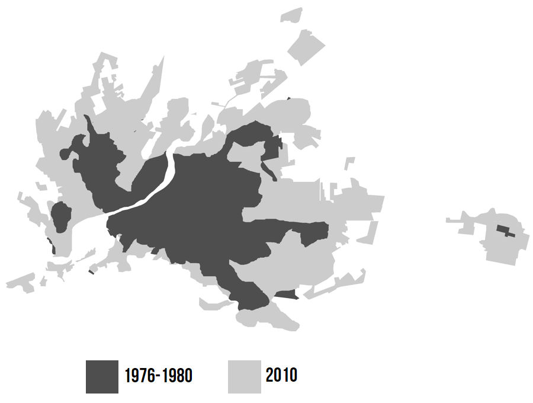
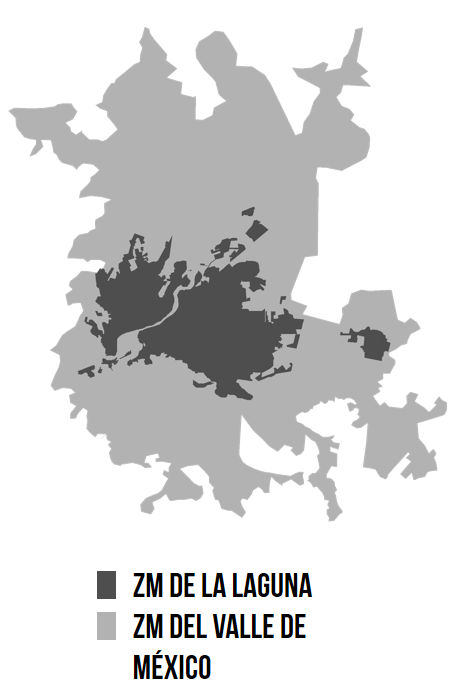
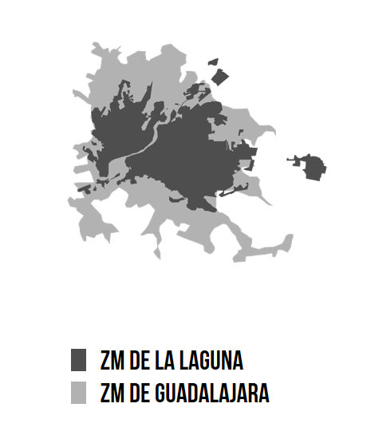
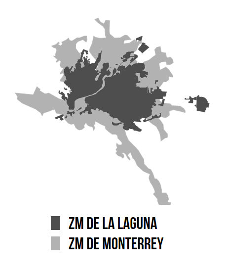
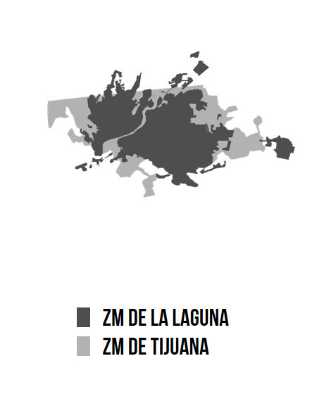
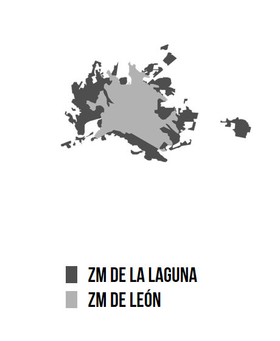

"Necesitamos ciudades más densas, compactas, integradoras, inclusivas, que permitan reducir las desigualdades y recuperar el espacio público como bien común de todos los ciudadanos"
Joan Clos, ONU-Habitat
En la actualidad las ciudades mexicanas (al igual que la mayoría a nivel mundial), viven un proceso de crecimiento horizontal desmedido. Se dice que son ciudades 3D: Distantes, Dispersas y Desconectadas(1). La Zona Metropolitana de la Laguna (que comprende los municipios de Torreón, Gómez Palacio, Lerdo y Matamoros) no es la excepción, ya que ha experimentado un crecimiento de su área urbana mucho más acelerado al de su población. Del año 2000 al 2010, la ciudad disminuyó su densidad media urbana de 87.8 Hab./Ha a 77.1 Hab./Ha, lo cual se traduce en mayores distancias de desplazamiento, mayor demanda de infraestructura y servicios urbanos, incremento en las tasas de motorización, contaminación e inequidad social. El “urbanismo del automóvil” ha diseñado ciudades que responden directamente a la forma y velocidad en que se mueven los coches, produciendo manchas urbanas a su escala y necesidad.
La política pública a adoptar como estrategia debe ser la de crecimiento interno: densificar la ciudad implotando su crecimiento hacia adentro y hacia arriba. Para ello, es necesario que la planeación urbana defina como primera acción el detener el crecimiento horizontal y promover el desarrollo interno en vacíos intra-urbanos, así como la vivienda vertical.
Las ciudades compactas “viven” mejor, según nos muestran diferentes aspectos. Los presupuestos municipales se distribuyen en menores superficies, requiriendo menor cobertura de infraestructura como pavimento, drenaje, electricidad, recolección de residuos sólidos etc. La necesidad de desplazamientos es menor, por lo que el transporte público es más eficiente y cuenta con mayor cobertura. A su vez, la calidad urbana también puede ser mejor, las zonas densas cuentan con más personas caminando, se fomenta el comercio así como la mezcla de usos y estratos sociales. La ciudad sustentable del siglo XXI no es aquella con muchas áreas verdes ni azoteas cubiertas con celdas solares; es sencillamente la ciudad compacta.
Sin embargo, la densificación per sé, no es la solución a toda esta problemática. Se debe implementar una estrategia de densificación inteligente(2), donde se analicen a fondo las intensidades óptimas para cada zona de la ciudad, así como el equipamiento necesario a la hora de densificar. No todas las ciudades pueden pretender ser Manhattan.
“Es importante considerar el diseño urbano a nivel peatonal. Muchas veces se cree que para lograr alta densidad basta con crear desarrollos con el modelo “torres en el parque”. Sin embargo, el diseño urbano debe incluir el nivel de peatón, considerar la escala humana y reforzar la calidad del diseño de las calles y los espacios públicos.”
Erik Vittrup, ONU-Habitat

Haciendo un ejercicio de simulación urbana: ¿Qué pasaría si la Zona Metropolitana de la Laguna tuviera la densidad media con la que cuenta la Zona Metropolitana del Valle de México? Es decir, si nuestro promedio de niveles de edificación fuera aproximadamente el doble, la vivienda se desarrollara en vertical y se llenaran los vacíos intra-urbanos. Con un cálculo básico, la ZML solo necesitaría de 11,486Has(3), casi la mitad con la que cuenta ahora. Es decir, la mancha urbana tendría la dimensión con la que contaba en los años 1976-1980, la cual era limitada aproximadamente por el aeropuerto al noreste de la ciudad, y por el Blvd. Rodríguez Triana al oriente, y por su parte, Gómez Palacio y Lerdo solo requerirían de menos de la mitad de su territorio urbano actual. Una ciudad de dimensiones considerables pero con un contorno todavía contenido.
El “daño” está hecho, la ciudad se desbordó y promete seguir haciéndolo, pero aún estamos en tiempo. El reto está en revertir esta tendencia dispersora por medio de estrategias y acciones de contención y definición de los límites urbanos, fomento a la ocupación de los vacíos, verticalización de la vivienda y reciclaje-aprovechamiento del suelo consolidado(4). Todo esto, implica una negociación del espacio donde se deberá sacrificar algunos aspectos pero se ganarán muchos otros. Siempre con el fin de desarrollar una ciudad próspera, equitativa y sustentable.
Superposición de área urbana de la ZML con otras zonas metropolitanas de México
    
Referencias
- Reforma Urbana: 7 propuestas para las ciudades de México. México, D.F., 2013
- Cámara de Senadores del H. Congreso de la Unión. (2014). México Compacto: Las condiciones para una densificación inteligente en México. México D.F.: Grupo Impresso.
- IMPLAN Torreón. (2015). Sistema de Información Geográfica 2015, de IMPLAN Torreón
- Transconsult. (2011). Plan Integral de Movilidad Urbana Sustentable. Torreón, Coah.